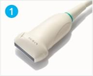
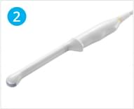
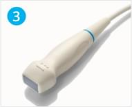
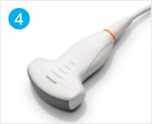
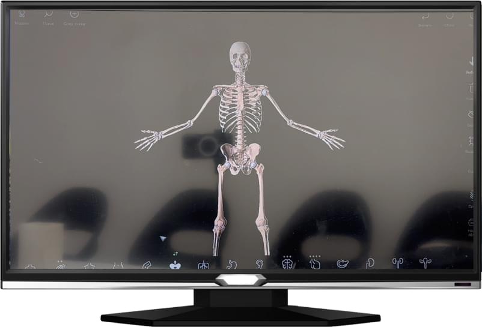
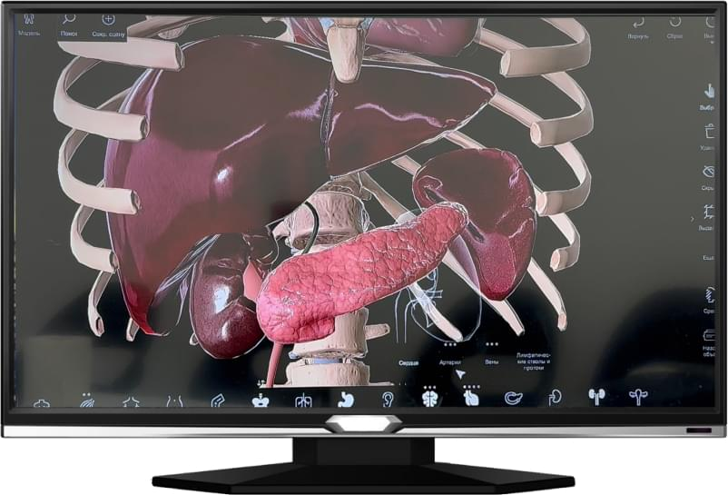
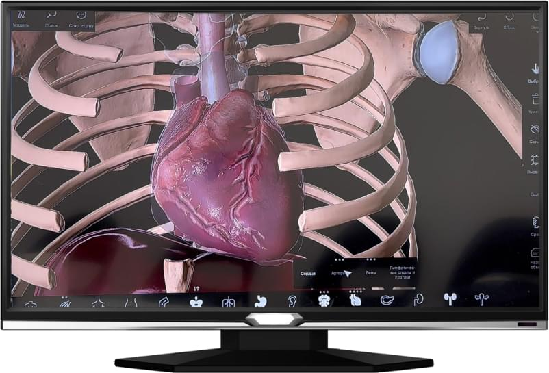

Обучение ультразвуковой диагностике с постановкой руки

Как проходит обучение

Темы
Физико-технические основы ультразвукового метода исследования, ультразвуковая диагностическая аппаратура
- Принципы получения ультразвукового изображения
- Ультразвуковые диагностические системы. Принципы устройства, типы и характеристики
- Биологические эффекты ультразвука и безопасность
- Виды ультразвуковых исследований (в том числе в В-режиме, допплеровских режимах, режиме эластографии)
- Ультразвуковая семиотика физиологических и патологических состояний и заболеваний человека и плода
Ультразвуковая диагностика заболеваний органов пищеварительной системы
- Ультразвуковая диагностика заболеваний печени
- Ультразвуковая диагностика заболеваний желчевыводящей системы
- Ультразвуковая диагностика заболеваний поджелудочной железы
- Ультразвуковая диагностика заболеваний желудочно-кишечного тракта
Ультразвуковая диагностика в уронефрологии
- Ультразвуковая диагностика заболеваний почек
- Ультразвуковая диагностика заболеваний мочевого пузыря
- Ультразвуковая диагностика заболеваний предстательной железы, семенных пузырьков и простатической уретры
- Ультразвуковая диагностика заболеваний органов мошонки
- Ультразвуковое исследование надпочечников.
Ультразвуковая диагностика в гематологии
- Ультразвуковая диагностика в гематологии
Ультразвуковая диагностика заболеваний поверхностно расположенных органов, мягких тканей и суставов опорно-двигательного аппарата
- Ультразвуковая диагностика заболеваний щитовидной железы
- Ультразвуковая диагностика заболеваний молочной железы
- Ультразвуковая диагностика заболеваний мягких тканей и суставов опорно- двигательного аппарата
- Ультразвуковая диагностика заболеваний около щитовидных желез
- Ультразвуковая диагностика заболеваний слюнных (околоушных и подчелюстных) желез
Ультразвуковая диагностика в акушерстве и гинекологии
- 1-й триместр беременности
- 2-й и 3-й триместры беременности
- Ультразвуковая диагностика заболеваний матки
- Ультразвуковая диагностика заболеваний яичников
- Ультразвуковая диагностика заболеваний маточных труб
Ультразвуковая диагностика заболеваний сердца и сердечно-сосудистой системы
- Виды исследования сердца
- Стандартное медицинское заключение по результатам УЗИ
- Левый, правый желудочек
- Предсердия
- Митральный, аортальный, трикуспидальный клапаны, клапан легочной артерии
- Перикард
- Врожденные пороки сердца
- Ультразвуковая диагностика заболеваний сосудов головы и шеи
- Ультразвуковая диагностика заболеваний сосудов верхних и нижних конечностей
- УЗД заболеваний брюшного отдела аорты и ее висцеральных ветвей
- УЗД заболеваний системы нижней полой вены и портальной системы
Оперативные вмешательства под контролем ультразвука
Пункционная биопсия под контролем ультразвука
Оказание медицинской помощи в экстренной форме
- Медицинские критерии определения степени тяжести вреда, причиненного здоровью человека
- Правила проведения базовой сердечно-легочной реанимации
- Порядок и правила оказания медицинской помощи при возникновении осложнений при проведении ультразвуковых исследований
На занятиях используется Mindray DC-45
- Ультразвуковая система высокого класса Mindray DC-45
- Описание УЗИ аппарата Mindray DC-45:
- 21.5-дюймов LED Монитор высокого разрешения
- Командный сенсорный экран 13.3" с возможностью регулировки угла наклона Режимы визуализации: B/M/Color/Color M/Power/Directional Power Doppler Flow
- Импульсно-волновой допплер (включая режим высокой частоты повторения импульсов
- HPRF)
- PSH™ , Тканевая гармоника c фазовой инверсией iClear™ - адаптивный алгоритм подавления зернистости iBeam™ - многолучевое сложносоставное сканирование iTouch™ - автоматическая оптимизация изображений iZoom™ (режим полноэкранного отображения) Сохранение информации в формате "сырые данные"
- 1TB жесткий диск и база данных пациентов iStation™ 4 порта для датчиков
- Smart Track™ - Автоматическая подстройка расположения и угла наклона рамки цветового допплера с автоматическим отслеживанием положения контрольного объема
- Shared Service (включая пакеты Obstetrics, Pediatrics, Gynecology, Abdomen, Urology,
- Small Parts, Vascular and Cardiology packages)
- iScanHelper (Встроенное обучающее программное обеспечение)
- MedSight™ - передача информации на электронные устройства пациента (Доступна для операционных систем IOS/Android, опция DICOM basic на ультразвуковом сканере необходима для работы с устройствами на IOS )
- Держатель для внутриполостного датчика (по умолчанию с левой стороны сканера, если его расположение нужно справой стороны - выберите опцию "Right" перед заказом) Left
Четыре датчика Mindray DC-45

Высокоплотный линейный датчик L12-3E, 3,0 - 13,5 МГц, апертура 38 мм, 192 элемента

Микроконвексный внутриполостный датчик V11-3, 2,4 - 12,8 МГц, рад. кривизны 11мм, 128 элементов

Секторный фазированный датчик P4-2, `,0 - 5,2 МГц, 23.4 мм, 64 элемента

Конвексный датчик С5-2, 1,5 - 6,0 МГц, рад. кривизны 50 мм, 128 элементов
 Трехмерная модель человека
Реалистичную трехмерную модель человека можно вращать и рассматривать под любым углом
Изучать строение и работу всех систем организма в комплексе или по отдельности
Реалистичную трехмерную модель человека можно вращать и рассматривать под любым углом
Изучать строение и работу всех систем организма в комплексе или по отдельности

3D изображения и анимация
За наглядность отвечают 3D изображения и анимация
Функция дополненной реальности позволяет спроецировать любое изображение в пространстве и увидеть интересующую часть тела прямо перед собой
За наглядность отвечают 3D изображения и анимация
Функция дополненной реальности позволяет спроецировать любое изображение в пространстве и увидеть интересующую часть тела прямо перед собой
 Моделирование патоморфологических изменений
Моделирование патоморфологических изменений, характерны для различных заболеваний и синдромов на интерактивных 3D-моделях органов
Моделирование патоморфологических изменений, характерны для различных заболеваний и синдромов на интерактивных 3D-моделях органов